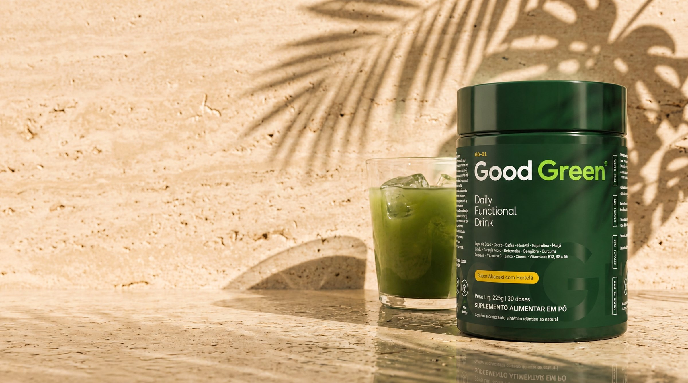
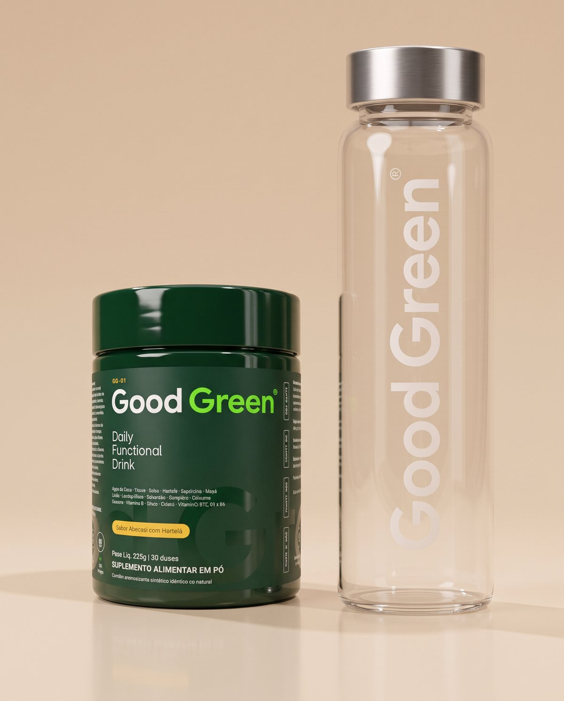
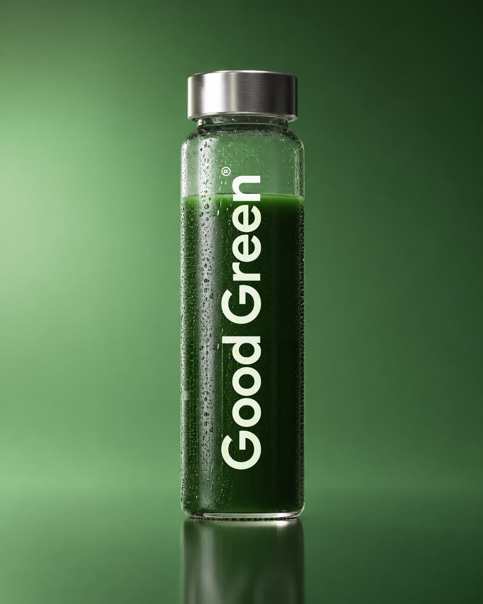
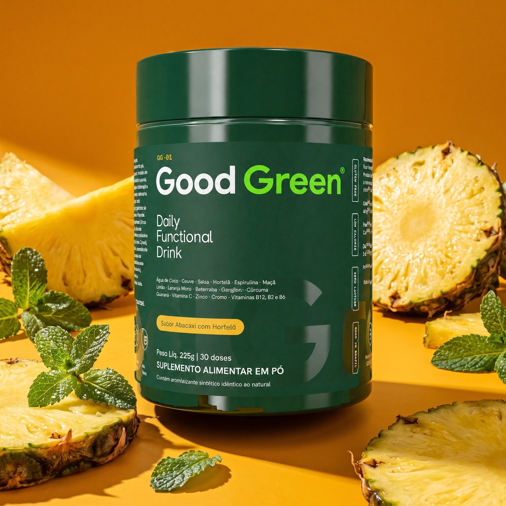
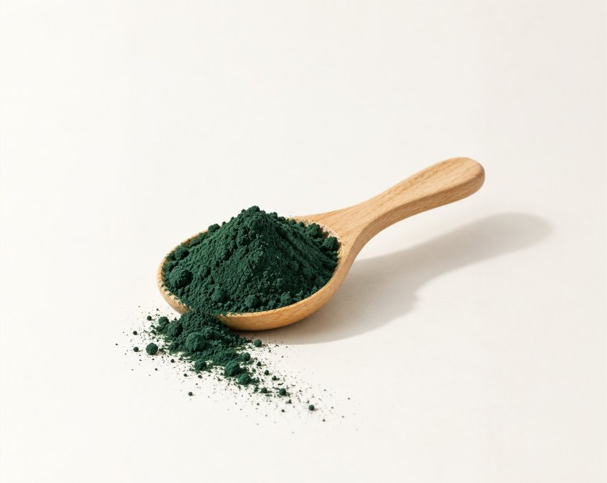
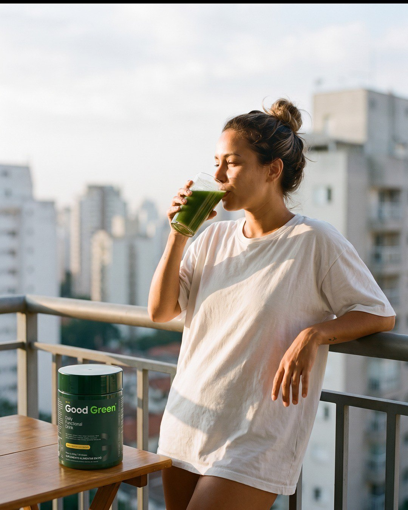
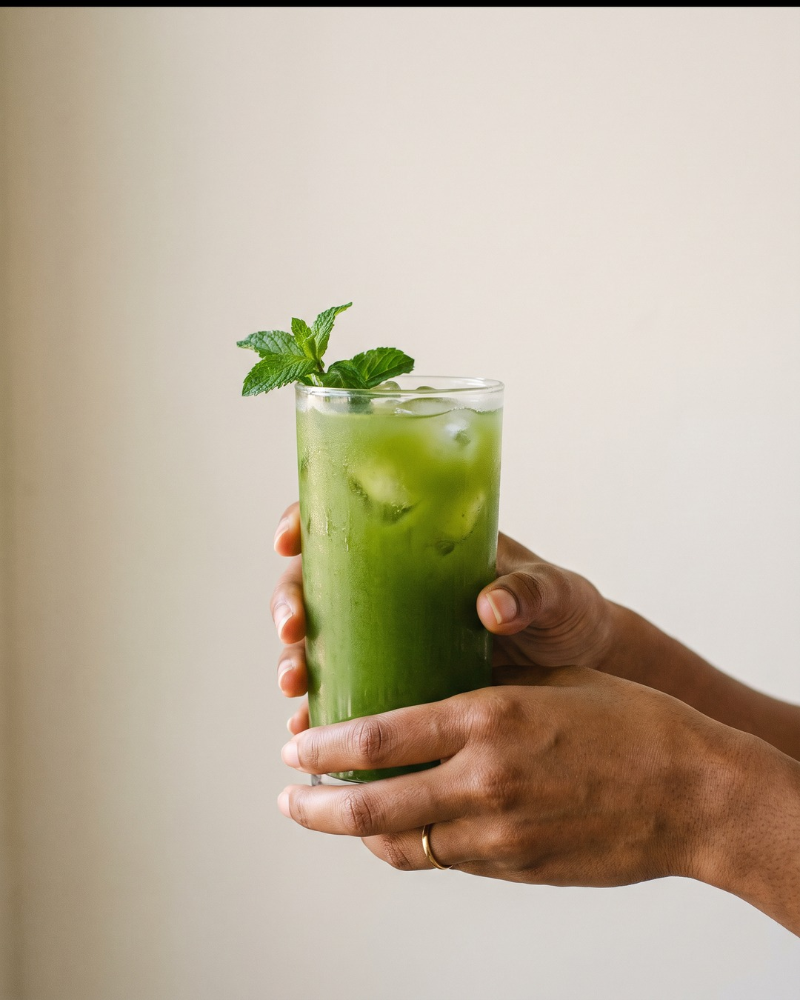
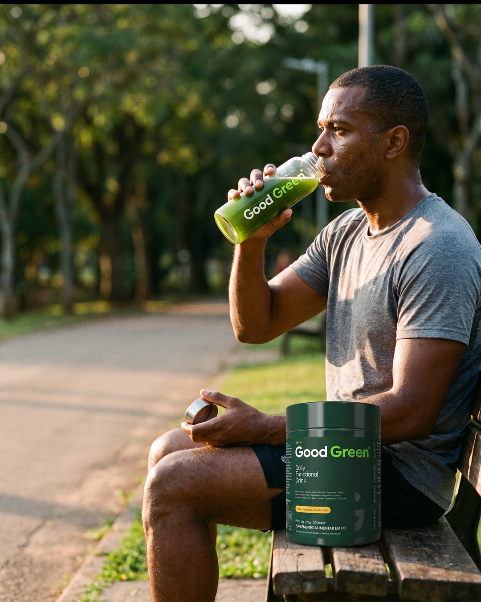

★★★★★
Virou rotina sem esforço
Eu tentava fazer suco verde e desistia na segunda semana. Com a Good Green é uma medida na água e pronto. O sabor de abacaxi com hortelã me surpreendeu.
Good Green resolve em 30 segundos: couve, espirulina, gengibre, guaraná, vitaminas e minerais numa medida. É só misturar em 300 ml de água. Sabor abacaxi com hortelã.

Avaliações ilustrativas do protótipo · as reais entram pela Yampi
Eu tentava fazer suco verde e desistia na segunda semana. Com a Good Green é uma medida na água e pronto. O sabor de abacaxi com hortelã me surpreendeu.
Deixo a garrafa de vidro na geladeira e levo para o escritório. Virou rotina sem esforço. A garrafa de brinde foi o que me fez testar.
Tomava vitamina C, complexo B e um verde separado. Agora é um pote só, e o pó dissolve bem na água. Já estou no segundo pote.
Sem lavar, cortar, bater ou coar. Uma medida em 300 ml de água, mexe e pronto: em 30 segundos.


Valores da tabela nutricional do rótulo. %VD com base em uma dieta de 2.000 kcal.





Daily Functional Drink · 225 g · 30 doses
Sabor Abacaxi com Hortelã
Prefere sem assinatura?
Uma bebida verde em pó com couve, espirulina, gengibre, cúrcuma, guaraná, vitaminas e minerais. Uma medida de 7,5 g em 300 ml de água, uma vez ao dia. Sabor abacaxi com hortelã.
Para adultos que querem colocar verdes na rotina sem liquidificador. Indicado para maiores de 19 anos. Não deve ser consumido por gestantes, lactantes e crianças. Contém cafeína do guaraná.
Misture uma medida (7,5 g) em 300 ml de água até ficar homogêneo. Gelada fica ainda melhor. Uma vez ao dia, no horário que for melhor para você.
Maçã, polidextrose, água de coco, couve, salsa, hortelã, guaraná, limão, espirulina, gengibre, beterraba, cúrcuma, laranja moro, vitaminas C, B2, B6 e B12, cromo e zinco. Por porção: 45 mg de vitamina C, 100% do VD de B6 e B12, 571% do VD de cromo e 75 mg de cafeína. Tabela completa na página de ingredientes.
Fabricado no Brasil, com lote e validade impressos no pote. Produto notificado, dispensado de registro conforme a RDC 240/2018.

Folha verde da base da fórmula.

Microalga, a cor verde-escura do pó.

Raízes que dão o fundo picante.

A cafeína natural da fórmula.
Maçã · polidextrose · água de coco · couve · salsa · hortelã · guaraná · limão · espirulina · gengibre · beterraba · cúrcuma · laranja moro · vitaminas C, B2, B6 e B12 · cromo · zinco
| Good Green | Suco verde caseiro | Vários potes | |
|---|---|---|---|
| Pronto em 30 segundos | não | parcial | |
| Sem lavar, cortar ou bater | não | ||
| Vitaminas C, B2, B6 e B12, cromo e zinco | parcial | ||
| Couve, espirulina, gengibre e guaraná juntos | parcial | não | |
| Uma dose por dia | não | ||
| Sabor abacaxi com hortelã | depende | não | |
| Zero lactose e sem glúten | depende | ||
| Com cafeína natural do guaraná | não | parcial |
No primeiro pedido da assinatura, o pote de Good Green chega com a garrafa de vidro para preparar a dose e levar com você.
Vídeos reais de creators entram aqui antes da publicação.




Garrafa de vidro de brinde no primeiro pedido da assinatura. Sem fidelidade: pause ou cancele quando quiser.
Este produto não é um medicamento. Não exceder a recomendação diária de consumo indicada na embalagem. Indicado para maiores de 19 anos. Não deve ser consumido por gestantes, lactantes e crianças. Contém cafeína (guaraná). Produto notificado, dispensado de registro conforme RDC 240/2018. As informações desta página não substituem orientação de nutricionista ou médico. Consulte um profissional antes de iniciar o uso se você tem alguma condição de saúde ou faz uso de medicamentos. Garrafa de vidro de brinde válida para o primeiro pedido da assinatura, enquanto durar o lote. Frete grátis no plano trimestral. A assinatura pode ser pausada ou cancelada a qualquer momento, sem multa.